جهت مشاهده صفحه «الگوی صدور اسناد» از صفحه اصلی نرم افزار ابتدا منوی مالی و حسابداری را انتخاب نمایید:
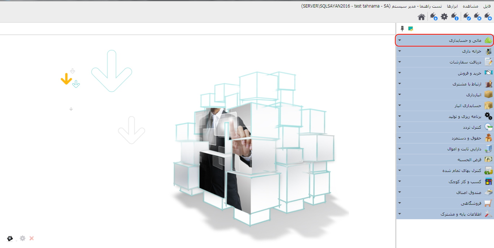پس از اجرای منوی مالی و حسابداری «الگوی صدور اسناد» کلیک کنید:
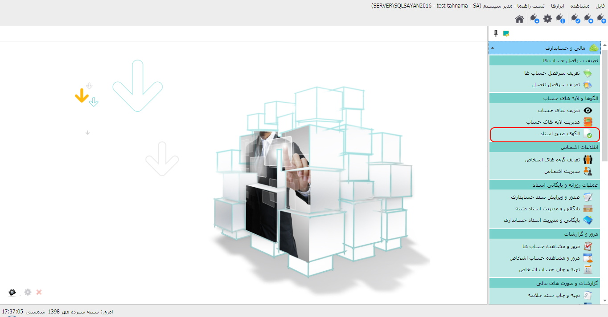سرانجام تصویر زیر را مشاهده خواهید کرد:
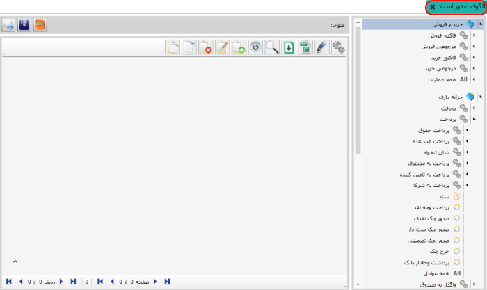در صورتی نیاز به ایجاد سند حسابداری، برای نرم افزارهایی از قبیل خزانه داری، خرید و فروش و ... می باشید ،پس از ثبت عملیات مربوطه دکمه «ثبت سند» را انتخاب نمایید تا سیستم وارد صفحه صدور سند حسابداری را اجرا نماید. در این مرحله لازم است حساب های کل و معین مناسب با عملیات انتخابی را به صورت دستی وارد و سند را ثبت کنید.اما در صورتی که بخواهید سیستم به صورت خودکار حساب های کل و معین متناسب با عملیات انتخابی را در فرم سند حسابداری وارد نماید، از صفحه ی تصویر فوق برای هر یک از عملیات ها الگوهای مناسب صدور سند را تعریف نمایید. در جدول سمت راست تصویر فوق عنوان سیستم ها را مشاهده خواهید کرد. هنگامی صفحه مورد نظرتان را اجرا می کنید، لیست عملیات هایی را که برای آن تعریف کرده اید به نمایش درآمده و با انتخاب هر عملیات اجزای آن عملیات نیز نمایان می شود. (در تصویر فوق صفحه خزانه داری و عملیات پرداخت انتخاب شده و اجزاء و عوامل مربوط به آن نیز در زیر آن لیست شده اند.) شما می توانید برای هر یک از عوامل الگوی سند مناسب را ایجاد کنید برای این کار روی عامل مورد نظر کلیک کنید سپس گزینه اضافه را از سمت چپ انتخاب کنید تا فرم مربوط به ایجاد الگو اجرا شود:
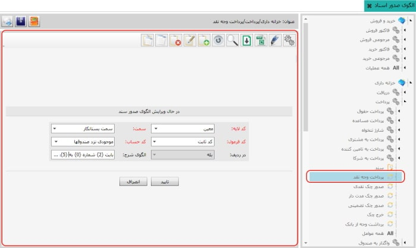در تصویر فوق برای عامل «پرداخت وجه نقد» الگو تعریف می کنیم. با تکمیل اطلاعات فرم ایجاد الگوی صدور سند، الگوی مورد نظر برای عامل انتخابی ایجاد خواهد شد. همواره به خاطر داشته باشید، برای هر یک از عوامل باید دو الگوی سند، یکی در سمت بدهکار و دیگری در سمت بستانکار تعریف شود. در تصویر زیر به نحوه ایجاد الگو اشاره شده است:
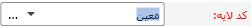اکنون لایه ی مناسبی را که می خواهید با عامل انتخابی شما ارتباط داده شود را انتخاب نمایید.
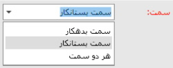در این پنجره الگوی صدور سند خود را متناسب با عملیات و کد عامل مربوط به آن را انتخاب می نمایید.
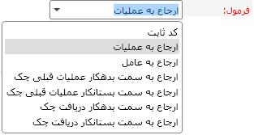این قسمت برای سیستم های مختلف گزینه های مختلفی دارد و به وسیله آن می توانیدمتناسب با عملیات، کد عامل و سمتی را که وارد کرده اید گزینه ای را انتخاب نمایید که سیستم با توجه به آن در فرم محاسبه سند حسابداری برای عملیات مورد نظر، حساب کل و معین را در فرم وارد کند.
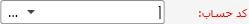در فرم ایجاد الگوی صدور سند اگر از قسمت «فرمول» «کد ثابت» را انتخاب کنید این گزینه روشن خواهد شد و شما باید از این قسمت حساب مناسب مورد نظر را برای الگوی صدور سند انتخاب کنید. در صورتی که به جز «کد ثابت» گزینه ی دیگری را از «فرمول» انتخاب کنید این گزینه خاموش خواهد بود.
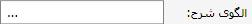برای هر یک از ردیف های بدهکار و بستانکار در سند حسابداری می توانید الگوی شرح تعیین کنید که این الگو توضیحی درباره ی عملیات مرتبط با آن ردیف از سند حسابداری می باشد. با کلیک روی سه نقطه ... پنجره مربوط به الگوی شرح نمایان می شود.
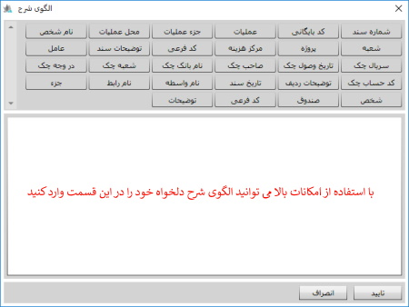همچنین امکان دیگری در قسمت الگوی شرح قرار داده شده است که با استفاده از آن می توانید برای هر ردیف از سند حسابداری، همزمان سه فیلد شرح ردیف، کد پیگیری و تاریخ پیگیری را طبق الگو پر کنید. شکل زیر نحوه استفاده از این قابلیت را نشان می دهد.
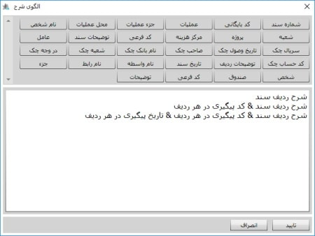به جای هر یک از بخش های موجود در بین جدا کننده ها می توانید گزینه مورد نظرتان را از لیست بالای پنجره انتخاب کنید و الگوی شرح هر یک از ردیف های سند حسابداری را به دلخواه خودتان تعریف کنید.
شما می توانید طبق آن چه که گفته شد برای همه عوامل یا عوامل دلخواه از سیستم های مختلف از جمله سیستم های خرید و فروش، حقوق و دستمزد و بهای تمام شده الگوی صدور سند ایجاد کنید.
برای تعریف الگوی صدور سند حسابداری در سیستم خرید و فروش، مطابق شکل زیر از لیست درختی سمت راست ، یکی از عملیات ها مثلا فاکتور فروش را برای تعریف الگو انتخاب می کنیم.
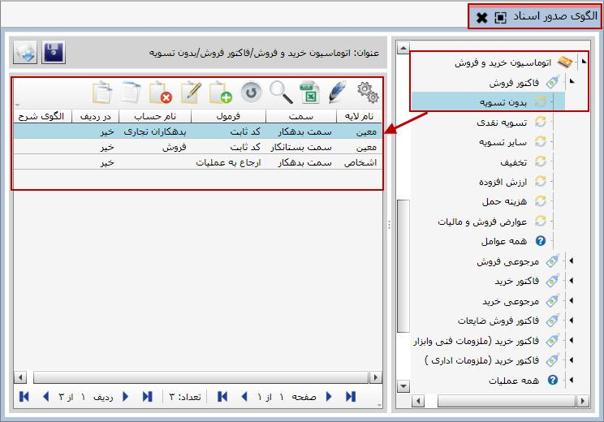در شکل بالا مشاهده می کنید که برای عملیات فاکتور فروش در حالت بدون تسویه الگوی صدور سند حسابداری تعریف شده است. فیلدهای نام لایه، سمت، فرمول، نام حساب و الگوی شرح همانند آنچه که برای اسناد خزانه گفته شد می باشد، اما برای عملیات خرید و فروش فیلدی با عنوان در ردیف تعریف شده است که با استفاده از آن می توانید هر دو سمت بدهکار و بستانکار سند حسابداری مربوط به سند خرید و فروش را به ردیف های سند خرید و فروش ریز کنید. برای مثال فرض کنید شما فاکتور فروشی دارید که دارای 4 ردیف می باشد، در صورتی که در الگوی صدور سند مقدار فیلد در ردیف را بله انتخاب کنید، در سند حسابداری آن مشاهده خواهید کرد که به ازای هر ردیف در فاکتور فروش، یک ردیف بدهکار و یک ردیف بستانکار در سند حسابداری آن خواهید داشت. اگر مقدار این فیلد را خیر انتخاب کنید، سمت بدهکار و بستانکار سند حسابداری بر اساس مجموع ردیف های سند خرید و فروش ثبت خواهد شد.
به منظور راحتی کاربر الگوی صدور سند پیش فرضی در خود سیستم قرار دارد که می توانید آن را در سیستم فراخوانی کنید. برای این کار کافی است روی گزینه «خواندن الگو ها از فایل» کلیک کنید تا صفحه مربوط به آن باز شود.
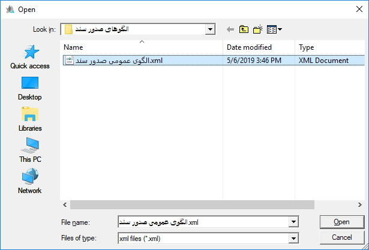در صفحه شکل بالا «الگوی عمومی صدور سند» را که الگوی کامل و استانداردی است انتخاب کنید و روی Open کلیک نمایید تا این الگو ها در سیستم اعمال شوند.
به کمک این گزینه می توانید الگوهای عمومی خود را در فایلی ذخیره کنید.